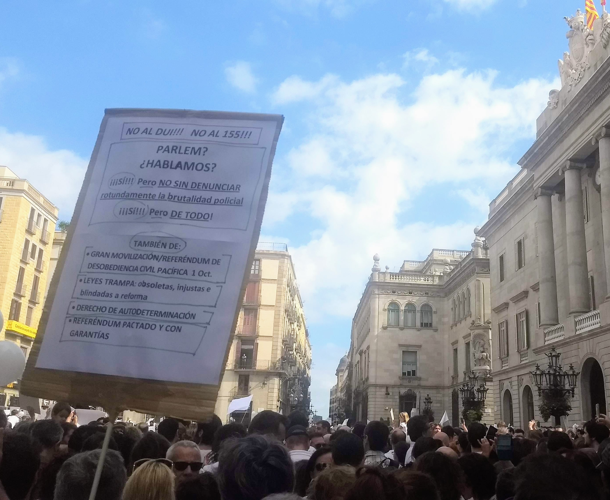

Striking a Viable Balance Between Effective and Just Transition in Urban Climate Governance
Hofstad, H. and M. Millstein (2025)
Presenta: Prof. Carlos A Navarrete (Febrero de 2026)
Transformación y Contestación Social
Las políticas urbanas de sostenibilidad han dejado de ser marginales para convertirse en agendas económicas centrales en el Norte Global. Sin embargo, este éxito ha traído consigo una polarización inevitable.
Nos enfrentamos a una dicotomía en la movilización social: desde movimientos proactivos como Extinction Rebellion, que exigen urgencia, hasta movimientos reactivos que perciben estas políticas como amenazas existenciales a su estilo de vida.
<
Texto Íntegro Recuperado
1. Transformación de las políticas urbanas
El texto original describe detalladamente cómo, en el contexto del Norte Global, las políticas urbanas de sostenibilidad y cambio climático han evolucionado drásticamente. Han pasado de ser impulsadas por actores marginales y activistas específicos a constituir agendas ampliamente aceptadas, institucionalizadas y económicamente relevantes. Esta integración en la economía principal marca un éxito, pero simultáneamente ha generado conflictos sociales y políticos profundos, expresados tanto en movimientos que exigen mayor acción climática como en contra-movimientos organizados que perciben estas políticas como amenazas directas a su estilo de vida establecido y bienestar económico.
Referencias Clave: Hartmann y Jehling (2019), Bulkeley et al. (2014), Patterson (2023), Pahl-Wostl y Patterson (2021)
2. Contestación social: movimientos pro-clima y contra-clima
Se presentan dos tipos de movilización social diametralmente opuestos:
Movimientos proactivos: Ejemplificados por grupos como Extinction Rebellion y Fridays for Future. Estos actores demandan políticas mucho más estrictas, rápidas y radicales, argumentando que la inacción actual es una injusticia generacional.
Movimientos reactivos: Incluyendo partidos populistas de derecha en Europa (como los Chalecos Amarillos en Francia o protestas similares en Noruega) y protestas del sector agrícola. Estos grupos consideran injustas las medidas climáticas, oponiéndose firmemente a restricciones como los peajes urbanos, la eliminación de aparcamientos y los precios altos del combustible.
El argumento central es que estas posiciones no son meramente opiniones políticas, sino que se basan en valores profundamente divergentes sobre qué constituye la "sostenibilidad", qué es la "justicia" y cuáles deben ser las visiones de futuro para la ciudad.
El Dilema de la Ciudad Compacta
La "ciudad compacta" sirve como nuestro caso analítico principal. Aunque se presenta como el modelo ideal de eficiencia y sostenibilidad, la literatura crítica advierte que esta visión técnica puede ocultar profundas desigualdades sociales.
Si las políticas climáticas derivadas de este modelo no logran una aceptación amplia, corremos el riesgo de sufrir retrocesos políticos severos que deslegitimen la acción climática en su conjunto.
Texto Íntegro Recuperado
3. El desarrollo de la ciudad compacta como caso analítico
El artículo utiliza estratégicamente la "ciudad compacta" como el locus principal para analizar los valores en conflicto. Este modelo se ha convertido en la ortodoxia de la planificación urbana sostenible, promoviendo alta densidad, uso mixto del suelo y transporte público eficiente.
Sin embargo, se recupera aquí una crítica sustancial de la literatura: esta visión técnica a menudo enmascara desigualdades sociales. Al priorizar métricas de eficiencia (CO2 por cápita), se ignoran los efectos de gentrificación, desplazamiento y exclusión espacial que sufren las poblaciones de menores ingresos, alimentando así el resentimiento que nutre a los movimientos reactivos.
4. Riesgos para la legitimidad de las políticas climáticas
Se argumenta con fuerza que la falta de aceptación social no es solo un problema de relaciones públicas, sino una amenaza existencial para la política climática. Si las medidas se perciben como elitistas o injustas, pueden desencadenar un "backlash" (reacción violenta) político. Este retroceso no solo detiene proyectos individuales, sino que puede deslegitimar la ciencia climática y la necesidad de acción gubernamental en su totalidad, creando un estancamiento político peligroso.
Transición Justa: Tensiones y Marco
La transición justa no es solo un concepto técnico; es el campo donde colisionan las preocupaciones laborales y comunitarias con la urgencia ambiental. Debemos entender que prácticas cotidianas "insostenibles" (como conducir) son a menudo fundamentales para la identidad y el sustento de las personas.
Este artículo desarrolla un marco teórico específico para analizar estas tensiones en ciudades escandinavas, comparando valores para prevenir retrocesos.
Texto Íntegro Recuperado
5. La transición justa: tensiones políticas y éticas
El campo de la transición justa surge de la fusión entre las preocupaciones sindicales tradicionales y la política ambiental. El texto profundiza en cómo las prácticas cotidianas que los planificadores etiquetan como "insostenibles" —como comer carne roja, conducir automóviles privados o viajar en avión— no son simplemente hábitos que se puedan cambiar con educación.
Son, en cambio, elementos constitutivos de la identidad cultural y la seguridad económica de muchas personas. Por lo tanto, atacar estas prácticas sin ofrecer alternativas viables y culturalmente resonantes se percibe como un ataque a la identidad misma de estos grupos sociales.
6. Aporte específico del artículo
El documento se distingue por:
Desarrollar un marco teórico novedoso que une la justicia social urbana con la teoría de transiciones.
Focalizarse empíricamente en el contexto escandinavo, a menudo idealizado, para mostrar que incluso en sociedades con alto bienestar existen fracturas profundas.
Comparar sistemáticamente los valores, reclamos y experiencias vividas que determinan la aceptación o el rechazo radical de las políticas verdes.
Comparativa: Valores en Disputa
Movimientos Proactivos
Orientados al futuro. Buscan mejoras estructurales y trayectorias urgentes hacia la sostenibilidad (cero emisiones).
"Justicia intergeneracional y global."
Movimientos Reactivos
Centrados en el presente y el lugar. Buscan preservar espacios, tradiciones y modos de vida (ej. uso del coche, barrio).
"Justicia local y defensa de lo propio."
Sin embargo, estas categorías no son fijas. La proximidad personal altera la percepción: el apoyo a políticas climáticas suele disminuir cuando afecta directamente la esfera personal.
Análisis Comparativo Detallado
1. Diferencias fundamentales en la temporalidad
Existe una divergencia ontológica en cómo estos grupos perciben el tiempo. Los proactivos están obsesionados con el futuro y los "tipping points" (puntos de no retorno), dispuestos a sacrificar el bienestar presente por la supervivencia futura. Los reactivos, por el contrario, están anclados en el presente y en la defensa de lo que ya tienen (su lugar, su comunidad, sus rutinas), viendo el cambio rápido como una agresión.
2. Carácter situacional de la justicia
Las posiciones no son monolíticas. La investigación muestra que un individuo puede apoyar la acción climática en abstracto (nivel global/nacional) pero oponerse ferozmente a un peaje en su barrio (nivel local). Esta disonancia no es hipocresía, sino una jerarquización diferente de valores cuando el impacto es personal.
3. Valores colectivos en movimientos reactivos
Es crucial no desestimar a los movimientos reactivos como meramente "egoístas". El texto recupera que a menudo defienden valores colectivos legítimos: la historia local, la cohesión de la comunidad vecinal y el derecho a la ciudad tal como la conocen y valoran.
Las autoras no toman partido moral, sino analítico. El objetivo es mostrar que la transición justa solo es posible si se reconocen ambas posturas como legítimas en el debate público.
Proactivos: Énfasis en urgencia científica (Fridays for Future).
Reactivos: Énfasis en protección social y cultural (Vecinos contra densificación).
Reconocimiento, Justicia y Legitimidad
Terreno Común
Si el discurso se desplaza de temas polarizados a valores profundos compartidos (preservación, comunidad), existe una cauta posibilidad de convergencia.
Reconocimiento
Clave para explicar la discrepancia. Los reactivos sufren estigmatización y falta de reconocimiento, sintiéndose "desviados" de la norma social verde.
Legitimidad
La falta de participación genera "contested legitimacy". Cuando las políticas imponen cargas percibidas injustas, el riesgo de retroceso político es inminente.
Análisis Detallado
4. Terreno Común (Common Ground)
A pesar de la polarización, el análisis sugiere que es posible construir convergencia si se apela a valores compartidos subyacentes, como el deseo de una comunidad segura, aire limpio y espacios verdes accesibles, en lugar de centrarse únicamente en la reducción de CO2 como métrica abstracta.
5. Reconocimiento y Justicia (Fraser & Honneth)
El texto utiliza la teoría del reconocimiento para explicar el conflicto. La justicia no es solo redistribuir dinero, sino reconocer estatus. Las normas sociales urbanas actuales elevan al "ciclista urbano cosmopolita" como el ciudadano ideal, mientras estigmatizan al conductor suburbano de clase trabajadora como moralmente inferior o "atrasado". Esta falta de reconocimiento cultural es un motor potente de la reacción populista.
6. Legitimidad cuestionada
Cuando los grupos sienten que sus valores son despreciados sistemáticamente por las élites planificadoras, retiran su consentimiento al sistema democrático local, generando crisis de legitimidad que paralizan la gobernanza.
Teoría de Justicia
Aquí es útil mencionar el marco de Nancy Fraser sobre las tres dimensiones de la justicia:
Redistribución: (Recursos económicos)
Reconocimiento: (Estatus cultural y respeto)
Representación: (Voz política)
Los movimientos reactivos suelen sentir déficits agudos en las dimensiones 2 y 3.
Justicia Procedimental y Co-creación
Existe una brecha crítica en la experiencia del proceso político. Mientras los proactivos se sienten socios, los reactivos denuncian exclusión y falta de transparencia ("manipulación").
La solución apunta hacia la co-creación y la deliberación. Una "visión inclusiva" que incorpore voces disidentes no solo mejora la legitimidad, sino que evita la mala distribución de cargas.
Texto Íntegro Recuperado
7. Reclamos procedimentales
Los grupos reactivos frecuentemente denuncian déficits procesales: falta de acceso a la información técnica, opacidad en la toma de decisiones y falta de previsibilidad sobre cómo cambiarán sus vidas. Sienten que las decisiones se toman a "puerta cerrada" por expertos desconectados.
8. Inclusión y 9. Deliberación
Ambos grupos, paradójicamente, piden más democracia. La planificación tecnocrática (top-down) sin deliberación real polariza. El texto aboga por espacios deliberativos donde el conflicto no se suprima, sino que se canalice.
10. Co-creación como herramienta
La co-creación se propone no solo como una técnica de diseño, sino como una herramienta de justicia. Al involucrar a los afectados en el diseño de las soluciones (ej. diseño de nuevas rutas de transporte), se puede aumentar la propiedad del proyecto y su legitimidad. Sin embargo, advierten Ciplet & Harrison (2020), esto debe institucionalizarse con cuidado para no replicar las jerarquías de poder existentes dentro de los talleres participativos.
Alcance
Lejos de ser irreconciliables, hay solapamiento: todos quieren ciudades habitables. Las autoras sostienen que las ciudades deben:
Reconocer valores plurales (no solo valores verdes).
Revisar críticamente enfoques normalizados (cuestionar la "ciudad compacta").
Crear marcos de gobernanza colaborativa robustos.
Comprender las percepciones
Entender los valores detrás de la acción colectiva es la llave maestra para la legitimidad. Debemos movernos hacia una "política de valores" (Rogers & McAuliffe, 2025).
Dilemas de gobernanza
El desafío es desarrollar enfoques matizados y reflexivos sin abandonar las ambiciones transformadoras necesarias para enfrentar la crisis climática.
Implicaciones Políticas
1. Comprender percepciones
La implicación principal es que la gobernanza climática no puede ser "ciega a los valores". Los planificadores deben desarrollar una alfabetización en valores para entender por qué una comunidad se opone a un parque eólico o a un carril bici, más allá de etiquetarlos como "NIMBYs" (Not In My Back Yard).
2. Dilemas de la urgencia vs. democracia
Se plantea el dilema central: ¿Cómo ser lo suficientemente rápidos para evitar el colapso climático y lo suficientemente lentos para ser democráticos e inclusivos? El texto sugiere que ignorar la parte democrática (ser "efectivos" pero autoritarios) paradójicamente ralentiza el proceso a largo plazo debido a la resistencia social generada.
Balance Final
Es posible compatibilizar reducción de emisiones con justicia social si se reconocen tensiones. El marco une el enfoque político-institucional con el de capacidades (Amartya Sen), preguntando: ¿Qué es lo que la gente es capaz de hacer y ser en esta transición?
Un Marco Triple para la Transición
3.1. Reconocer Pluralidad
Analizar posiciones desde una perspectiva de capacidades. Superar la caricatura de "Greta vs Populistas" para ver la complejidad real de los valores humanos.
3.2. Procedimientos Colaborativos
Abrir la "caja negra" de las decisiones. Acceso a evaluaciones científicas y fortalecimiento de la inclusión de voces disidentes en todas las fases.
3.3. Escrutinio Crítico
Revisión continua de modelos normalizados como la "ciudad compacta". Discutir sus puntos ciegos alivia tensiones y revela preocupaciones invisibilizadas.
El Marco Propuesto (Texto Íntegro)
3.1 Reconocer la naturaleza plural y situada
El estudio revela una realidad compleja. Partir de valores centrales ayuda a corregir prejuicios. Se requiere un enfoque que valide las experiencias vividas de todos los residentes urbanos, entendiendo que la resistencia al cambio no es necesariamente negacionismo climático, sino defensa de una forma de vida.
3.2 Procedimientos colaborativos y transparentes
La falta de acceso erosiona legitimidad. Recomendación: abrir el proceso político desde la fase de definición del problema, no solo en la fase de implementación. Esto requiere recursos para que los grupos marginados puedan participar en igualdad de condiciones técnicas.
3.3 Redistribución y escrutinio crítico
Es necesario someter a prueba constante los dogmas de la planificación. Escuchar posiciones alternativas mejora la calidad de las soluciones y revela puntos ciegos del modelo de ciudad compacta (por ejemplo, cómo afecta a las familias numerosas, a los trabajadores por turnos o a los ancianos).
Hacia una Gobernanza Legítima
La legitimidad se construye cuando las personas se sienten reconocidas, incluidas y escuchadas. Equilibrar ambición sostenible con valores plurales es el camino para superar la polarización.